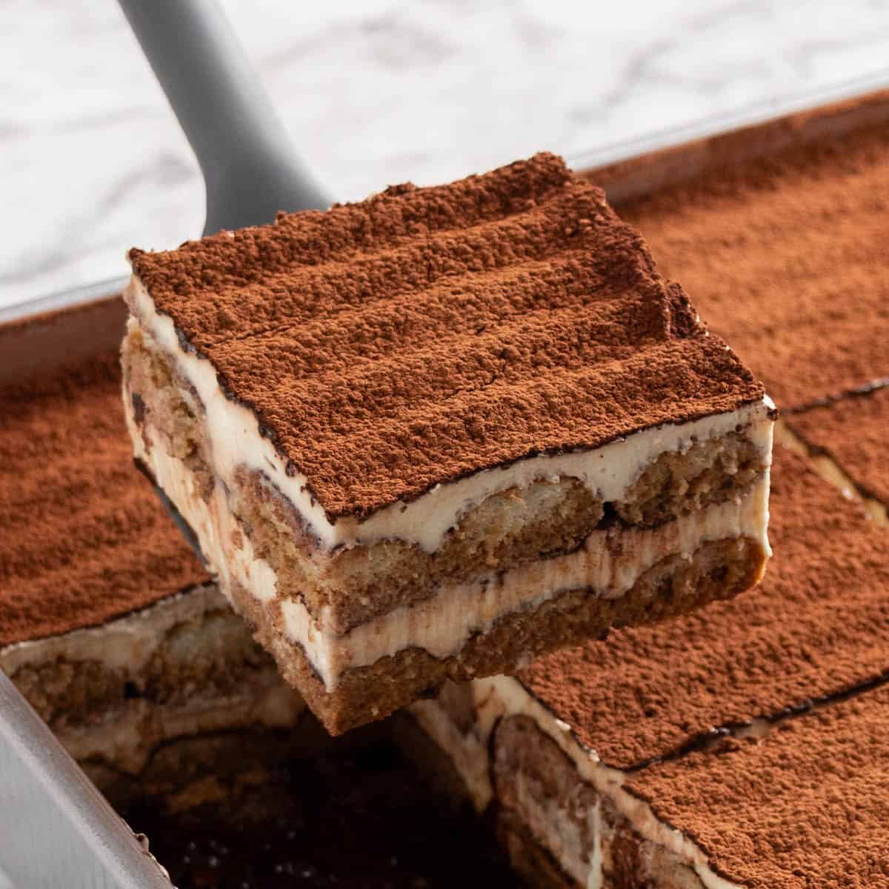

Home
Classic Tiramisu

Description
Tiramisu is a timeless creamy dessert base on Mascarpone
cheese, eggs and espresso-dipped ladyfingers, and this easy
recipe will make you love it even more. So head out to the grocery store and grab all the ingredients,
the weekend is coming and you need this tiramisu in
your life!
Ingredients
- 500g mascarpone
- 100-110g caster sugar
- 4 eggs (very fresh)
- ~300ml espresso coffee (or other very strong coffee)
- 300g ladyfingers
- cocoa powder (for dusting)
Steps
- Prepare the coffee. Let the coffee chill before
you dip the ladyfingers in it. You don't want to ruin the mascarpone
cream with hot ladyfingers.
- Start mascarpone cream.
- Separate egg whites and yolks.
- Whisk together egg yolks and sugar until
well blended, approximately 4-5 minutes. The
mixture should have doubled in size.
- Add mascarpone and continue to gently whip
until well combined. Doing this step gently
is the key for a fluffy mascarpone cream.
- Whip egg whites with a pinch of salt until
stiff peaks form. They should look like whipped cream.
- Add whipped egg whites into mascarpone mix gently.
- Layer the tiramisu.
- Spread a few spoonfuls of mascarpone cream on the
bottom of a baking dish.
- Dip each half of the ladyfingers in the coffee for
no more than 1 second. Place them evenly onto the mascarpone
layer.
- Spread more mascarpone cream on top of the ladyfingers.
- Continue until you use all the ingredients.
The tiramisu top layer should always be the mascarpone cream layer.
- Dust the tiramisu with cocoa powder.
- Let the tiramisu chill in the fridge for at least 5 hours.
Enjoy!
Back to Home Page